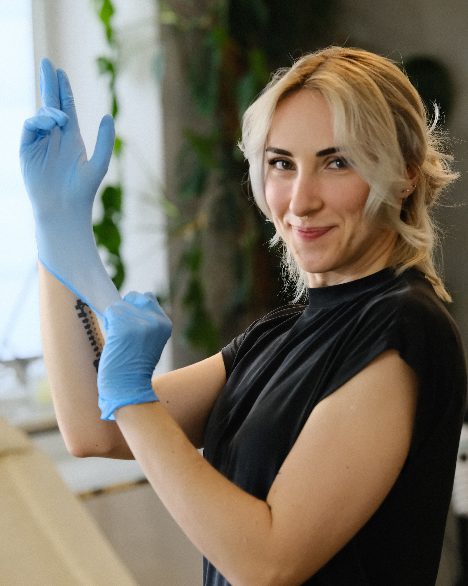

About me
Hi,
I'm Lexie!

My work is inspired by Alfons Mucha and the aesthetics of Art Nouveau. Feminine motifs often appear in my designs: witches, goddesses, temptresses, warriors and mermaids, as well as flowers in many forms. I feel most at home with delicate, precise lines, ornamentation and graphic compositions. I love subtle designs full of detail and harmony that complement the body's natural lines.
My career
I've always drawn, starting before I could even speak. I've been tattooing since 2017, and over time it has become one of the most important parts of my life. To follow this path, I even left behind another great passion: architecture, which I studied at Warsaw University of Technology, graduating with an engineering degree.
Beyond tattooing
Outside tattooing, I love travelling, whether to the other side of the world or on a spontaneous trip out of town. That makes me appreciate my profession even more, as it lets me work in different places across Poland and abroad. I'm also a huge fan of fantasy and horror: I love Sapkowski's books and the Lord of the Rings films. In my free time, I work out, run, collect feathers, pet cats and play games.